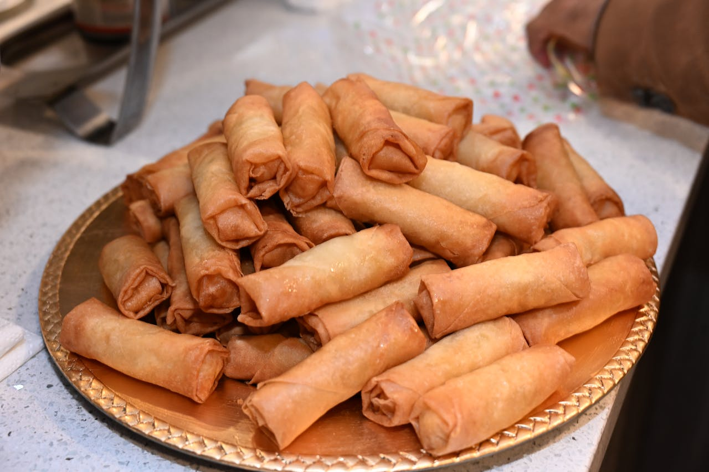

Vietnamese Spring Rolls
Home page

Description
Authentic Vietnamese Spring Rolls (Nem Rán or Chả Giò) are crispy, deep-fried rolls made with rice paper wrappers stuffed with a savory filling of ground pork or shrimp, shredded carrots, wood ear mushrooms, glass noodles, onions, and seasonings like fish sauce and pepper.
Ingredients
- 2 ounces dried thin rice noodles
- ¾ cup ground chicken
- ¼ cup shrimp - washed, peeled, and cut into small pieces
- 2 large eggs, beaten
- 1 carrot, grated
- 4 wood fungus mushrooms, chopped
- 2 green onions, chopped
- ½ teaspoon white sugar
- ½ teaspoon salt
- ½ teaspoon ground black pepper
- 24 rice paper wrappers
- 2 cups vegetable oil for frying
Steps
- Gather all ingredients.
- Soak rice noodles in cold water until soft, about 20 minutes. Drain well; cut into 2-inch long pieces.
- Combine noodle pieces, chicken, shrimp, eggs, carrot, wood fungus mushrooms, and green onions in a large bowl. Add sugar, salt, and black pepper; stir well.
- Soak 1 rice paper wrapper in a shallow bowl of warm water to soften, about 15 seconds. Place on a damp cloth laid out on a flat surface.
- Place 1 tablespoon filling mixture into the center of softened rice paper. Fold the bottom edge into the center, covering filling. Fold in opposing edges and roll up tightly. Repeat with remaining rice paper wrappers, soaking and filling each one individually.
- Heat oil in a wok or large skillet over medium heat.
- Working in batches of 3 or 4, fry spring rolls in hot oil until crisp and golden brown on both sides, about 5 minutes. Drain on paper towels.